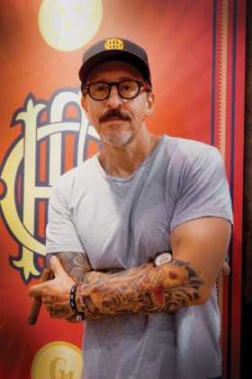
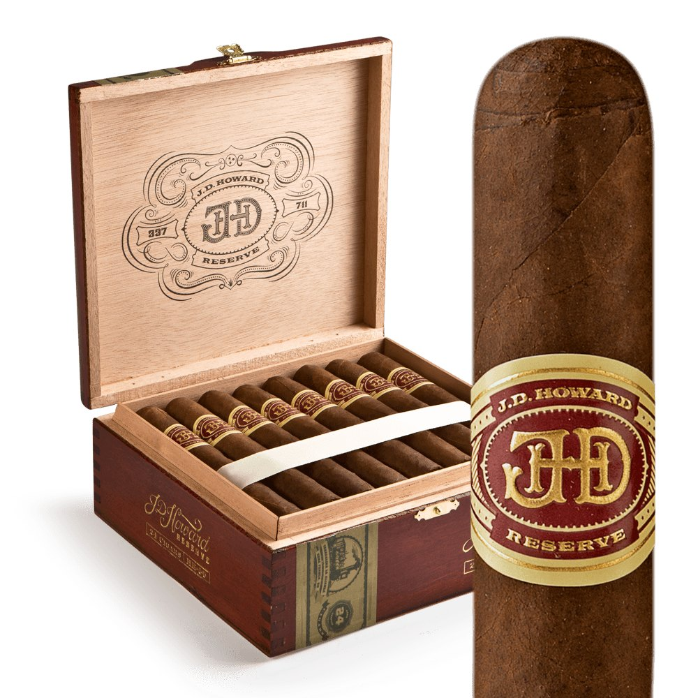
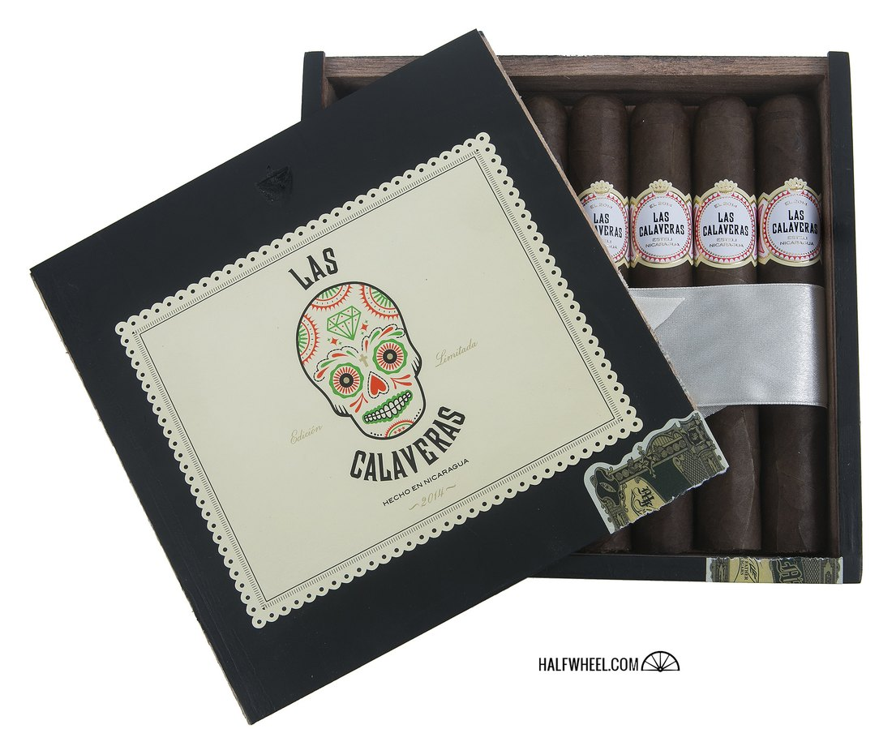
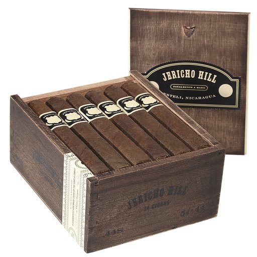
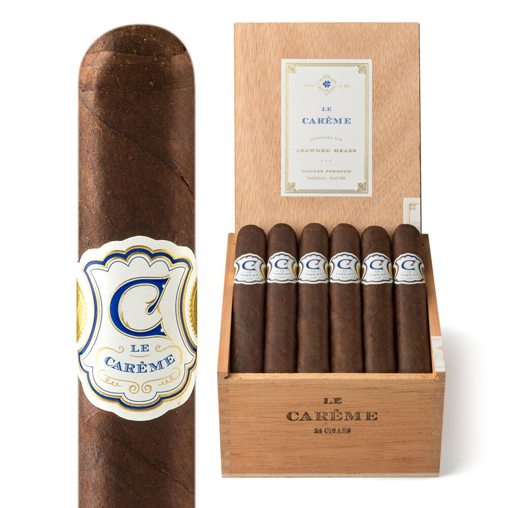
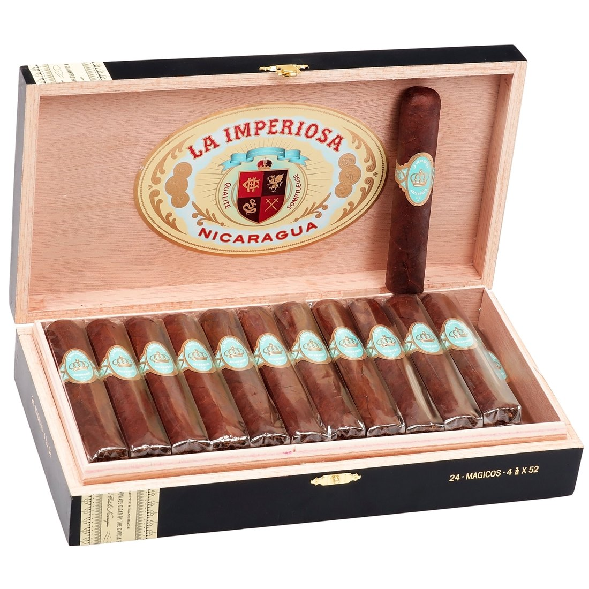
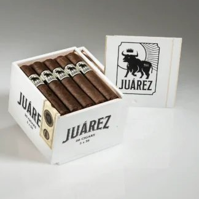
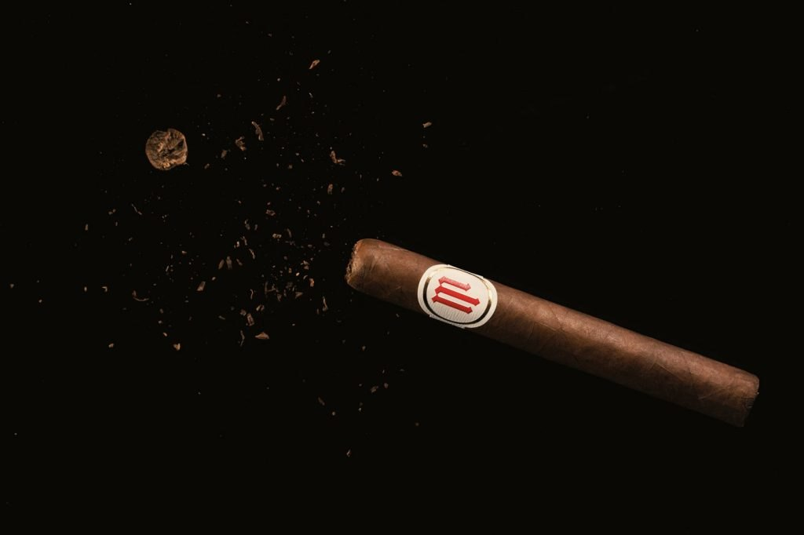
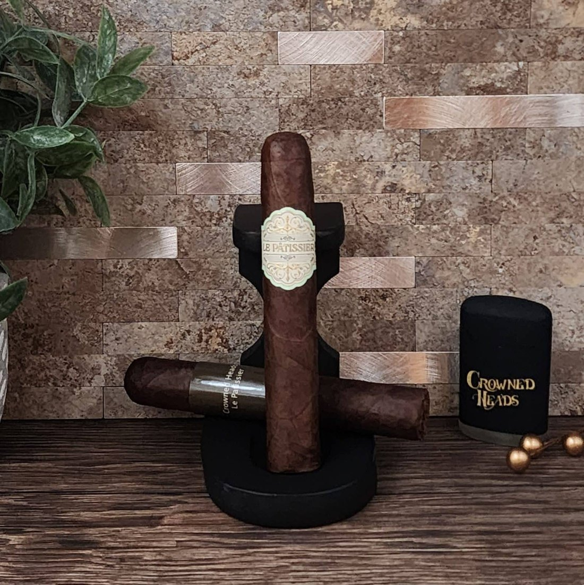

World Cigar News Feature
Feature — Crowned Heads
In researching Part 7, "Tatuaje," we came across a passage we cannot forget. It was 2019, episode 14 of "Box Press," the interview program of Boveda, the maker of cigar humidity-control products. Seated beside Pete Johnson of Tatuaje, a man said this:
"This guy literally changed the game back in 2003. Tatuaje paved the way for the Illusione, for the Crowned Heads, for all of the … 'disruptors' and quote, unquote 'boutique' brands today. If there was no Tatuaje, there would be no Crowned Heads."
The speaker was Jon Huber, co-founder of Crowned Heads. Once a marketing executive at the major maker CAO, in 2010 — when the company decided to leave its hometown of Nashville — he chose the road of staying in the city. The company he founded with three former colleagues takes its name from a scene in the film The Wizard of Oz. Its lines are named for a Kings of Leon song, the house where Led Zeppelin recorded, the lyrics of Johnny Cash, the alias of Jesse James, and the skeletons of the Day of the Dead. It owns no factory of its own; each line is made at a different master factory. Fifteen years after its launch, in its home market of America it has become an established boutique brand, a regular name in Cigar Aficionado's Top 25.

This feature begins with the man: an unlikely career that came from the fitness world into the cigar industry, fourteen years at CAO, and the decision made on the day the company left town. Then the origin of the name; the genealogy of lines colored by music and story; the annual limited edition that celebrates the dead; the fan community that calls itself a "Court"; and on to the changing of the guard and the rebirth of 2025. It is a portrait of the company — and of how deeply it is rooted in its hometown, and what that rootedness has carried.
The facts in this feature are limited to what we could corroborate through the trade press (Halfwheel, Cigar Aficionado, Cigar Journal, Cigar Coop, Cigar Press, Tobacco Business, SmokingPipes), the brand's official site, and the principals' own interview statements. Where figures or dates vary by outlet (such as the year the CAO acquisition closed), we do not settle on one figure; we print both, and we use no anecdote we could not back up. As for founder Huber's career before cigars: some introductions describe him as coming from the music industry, but the career that primary sources confirm is the fitness industry, and this feature follows that.
◆ Chapter 1 — The Man: Jon Huber
Jon Huber's background is an unusual one for the cigar industry. Raised in San Francisco, he studied kinesiology at university and worked in Los Angeles as a personal trainer. His previous career was not in the music industry. Music was not his "job"; as we will see below, it was the wellspring of the brand's naming — and he was himself an enthusiast who played drums in a jazz band in his student days. This distinction matters in understanding how his brand came to be. Music was not a decoration for selling; it was the place where his private passion lived.
His encounter with cigars came through a cigar of his fiancée's father. From there he fell for CAO's La Traviata, and in time crossed over from the smoking side to the making side. In 1996 he joined CAO, then headquartered in Nashville. His first job was packing boxes. From there he passed through events work and in the end climbed to director of lifestyle marketing. The prototype of the later Crowned Heads philosophy — "a cigar is not merely a product; it is culture, and lifestyle" — was nurtured in those CAO years.

CAO at the time was a brand growing rapidly under the founding Ozgener family. Huber spent some fourteen years at the company. In the late 2000s, however, the wave of industry consolidation reached Nashville as well. How that ended is told in the next chapter. Here, one small episode that lets us glimpse the man. Advice he received in his early days from his boss, John Cantor, is something he has repeated over the years since: "Work hard, and someday someone will be watching, and will honor you for it. But stay late at the office just to stay, and no one will thank you." Perhaps that line lies at the bottom of his way of working after independence, and of a posture that does not chase the scale of the company.
In his trainer days in Los Angeles, the city's smoking regulations left almost nowhere to smoke a cigar. Huber's "sanctuary" was the garage of his home in the San Fernando Valley. Training equipment and cigar smoke cohabiting one space — he has said, in an interview with the cigar trade house SmokingPipes, that this was the starting point of his life with cigars. Fitness and cigars. Two things that look like opposites were, in him, continuous at a single point: "time spent facing your own body."
◆ Chapter 2 — The Turning Point: The Day the Company Left Town
In 2007, Scandinavian Tobacco Group (STG) acquired CAO (on the year of closing, some outlets place its entry under Henri Wintermans in 2008; this feature takes 2007 as its axis and notes both). After the acquisition, CAO's headquarters moved from Nashville to Richmond, Virginia. A brand rooted in the city was leaving the city. Huber did not choose to move with the company; he left in November 2010. They were the last days of CAO in Nashville, after his some fourteen years of service.
December 17, 2010. He calls this day "the last day of CAO Nashville." The press files he had collected over many years, he is said to have thrown into the trash (Cigar Journal). A ritual, perhaps, of disposing of the past in order to move forward. And just four days later, four ex-CAO people — Jon Huber, Mike Conder, Michael Trebing and Nancy Heathman — came together. The one who proposed independence was Conder, who had been CAO's senior vice president of marketing, SmokingPipes reports.
What the four chose was to stay in Nashville and build a company of their own. Not to transfer as cogs of a large corporation, but to stand independent as a small brand rooted in the city. What should the company be called? The answer came from an unexpected place.
◆ Chapter 3 — A Name and a Departure: The Wizard of Oz and Four Kicks
Huber told the origin of the company name "Crowned Heads" to Halfwheel in 2011. Watching the film The Wizard of Oz at home on his iPad, his eye caught the sign displayed on the caravan of the con man Professor Marvel: "The Crowned Heads of Europe: Past, Present, and Future." He says he took a screenshot of the scene on the spot. "Heads that wear the crown." The brand's bearing — its own crest bearing a crown on the cigar band, and its reverence for music and story bound together — is condensed into that single phrase. As for the scene of the final decision, there are also articles saying it was decided at a dinner with the members' families gathered; this feature touches on both and leaves it there.
The company, Crowned Heads, LLC, was founded in Nashville in 2011. From the very beginning it held up an aspiration: to be "not a company of cigars only" — a brand of culture and lifestyle, bound together with music, film and the stories of places. That intent was evident already in the name of its first work.
In November 2011 the debut line, Four Kicks, was released. The name comes from the song "Four Kicks" by Kings of Leon, a rock band from the same Nashville. Huber described the core of the song as "anger, rebellion, confidence, determination." Production was undertaken by Tabacalera La Alianza in the Dominican Republic. For its master, Ernesto Pérez-Carrillo, it was the first job of taking on another company's brand. The wrapper is Ecuadorian Habano. At launch there were four sizes, priced at $6.95–$8.65. It was a small sortie — 66 stores nationwide, 30,000 to 35,000 cigars — but a score of 91 points in Halfwheel's pre-release review made the unknown new company's name known across the industry.

Four Kicks has a sequel nine years in the making. At the 2011 launch, three candidate blends remained at the final stage, and Carrillo himself favored the version using Sumatra leaf. The Habano version was the one adopted — but in 2020, that "version Carrillo had backed" was released as Four Kicks Capa Especial. It earned 93 points in Cigar Aficionado and entered the magazine's Top 25 of 2020 at No. 20. A draft that should have been rejected became, nine years later, one of the signature works. An anecdote that symbolizes both the difficulty and the fun of blend judgment.
There was one more delightful candidate for the company name: "Serenity Now," the catchphrase of the popular comedy Seinfeld. It is a side story Huber revealed in Halfwheel's "10 Questions." Had that name been adopted, the crown crest might never have been born, nor the many stately line names that followed. The rebels' company escaped the name of serenity by a hair's breadth.
◆ Chapter 4 — Naming by Music and Story: From Headley Grange to the Outlaw
The name of the second work, Headley Grange (2012), is not the name of a song but of a "place." Headley Grange in England is the house where Led Zeppelin recorded "When the Levee Breaks" and other songs. "I wanted to make a blend that resounds like the drum intro of that song," Huber has said — the very essence of his naming science: designing flavor by sound. The size is the Estupendos (5½ × 52). In August 2012 it was released in advance as a limited run of 1,000 boxes (of 25), and in the spring of 2013 it became a regular line in five sizes. The wrapper is Ecuadorian Sumatra; production is at Tabacalera La Alianza. It earned 91 points in Cigar Aficionado and entered the magazine's Top 25 of 2012 at No. 24. Later, offshoots such as the Drum Stick, the Snare Drum and the Black Dog Maduro were also born.
This name also summoned a small courtroom struggle. In October 2012, the agricultural organization the National Grange filed a trademark opposition, and Crowned Heads brought suit in federal court in Nashville. It was a dispute over where the word "Grange" belongs. As to how it concluded, our research for this feature reached no certain record, so we leave it at the fact of its occurrence. Headley Grange remains on sale today.

On some retailer blogs and the like, one finds descriptions linking J.D. Howard to another outlaw, Billy the Kid. But both the brand's official explanation of the origin and the 1882 Nashville Banner article on which it rests consistently identify it as Jesse James's alias. This feature follows the official explanation and does not adopt the Billy the Kid theory. Where a name's origin is concerned, always go to the primary explanation. Unglamorous, but an iron rule when handling cigar naming.
Lined up this way, the pattern of the naming comes into view. A song (Four Kicks), a place (Headley Grange), a person and a story (J.D. Howard). Each is a "tribute" — a dedication to an object of Huber's own reverence. The next chapter's dedication to the dead was the destination of this pattern.
◆ Chapter 5 — Celebrating the Dead: Las Calaveras
Announced in February 2014 and released on May 21, Las Calaveras was the limited series that became the brand's turning point. Production left La Alianza for the first time, in a first collaboration with My Father Cigars, which we traced in Part 4. Its sources of inspiration were Mexico's Day of the Dead and "La Calavera Catrina," the skeleton print by the printmaker José Guadalupe Posada. And above all, it was an annual tribute to people close to the company who had died the year before.
The core of Huber's words is "not to mourn, but to celebrate the lives they lived." A cigar for celebrating that a person lived, rather than darkly grieving a death. The 2014 edition came in three sizes — LC550 / LC652 / LC754 — 1,000 boxes each (of 24), the wrapper an Ecuadorian Habano Oscuro, the price $8.95. It earned 94 points at Halfwheel and No. 4 in that magazine's Top 25 of 2014. The 2015 edition also placed, at No. 14, and the 2021 edition at No. 18 — an unusual accumulation of honors for an annual limited edition.

From 2016 the format became four vitolas a year, and each year's release became an annual event for enthusiasts in the home market. In 2024 appeared the Décimo Aniversario (6 × 52, $18.95, 2,500 boxes of 10), commemorating the tenth anniversary. And the 2026 edition has also been released, as reported in this site's news (introduced in the article dated November 7, 2026). That an annual limited edition continuing for more than ten years remains, each year, truly "a dedication to those who died that year" — the staying power of the concept is this series' real value.

◆ Chapter 6 — The Men Who Own No Factory: A Different Master Factory for Every Line
Crowned Heads' greatest characteristic is that it owns no factory of its own. But this is not "cannot"; it is a design philosophy of choosing, for each line, the factory best suited to that blend. Tabacalera La Alianza (Carrillo) in the Dominican Republic; My Father in Nicaragua; Tabacalera Pichardo, also in Nicaragua; and Drew Estate. Even among American boutique brands, there are few examples that press "manufacturing pluralism" through this clearly.
Jericho Hill (2014) was the first regular line made at My Father. The name is taken from a place name that appears in the lyrics of Johnny Cash's "Cocaine Blues," and the wrapper is Mexican San Andrés. The same year also brought the state-exclusive Tennessee Waltz. At first a limited edition for Tennessee only, its name is the song that was playing when Huber's grandparents met at a dance — written by Stewart and King in 1948, and made Tennessee's state song in 1965. The state-exclusive experiments continued: Yellow Rose for Texas (2015), Paniolo Especiale for Hawaii (2015), and Buckeye Land for Ohio (2018, made by Drew Estate). Among store exclusives, there is the Four Kicks 444, made for BriarWorks in Columbia, Tennessee, and the TAA-exclusive The Angel's Anvil (2014–2017; the name comes from a short story by Huber himself). Thick at the home base and its surroundings, wide across the nation. The shape of that distribution tells the geography of this brand's popularity.

La Imperiosa (2015) is the line that made the blend of the 2014 Las Calaveras limited edition a regular one. It was announced at IPCPR 2015 and shipped that July. Four sizes, $8.25–$9.75. The name and design derive from an old Cuban brand of the early 1900s, and the trademark was applied for in 2014. Made at My Father. However, Halfwheel later pointed out that the regular version's flavor is not entirely identical to the limited edition's. The billing of "the same blend made regular" and the actual difference in taste should be received separately.

Juárez (announced December 2018) began as an exclusive for Thompson Cigar, and became the first Crowned Heads line that Pichardo undertook. The development brief was "a single affordable cigar in the Jericho Hill manner" — and its price band of three sizes at $5.95–$7.95 tells exactly that story. The name, too, comes from the lyrics of "Cocaine Blues" — from the passage about being overtaken down in Juárez. The maker, Tabacalera Pichardo, is the factory founded in 2005 as Datuey Tabacos by the Cuban-born agronomist Eradio Pichardo, who before exile had held important posts in Cuba's cigar industry. And La Coalición (announced 2019, shipped November 20 of that year) was a true co-development with Drew Estate's blender Willy Herrera, made at that company's La Gran Fabrica. Connecticut broadleaf, four sizes, $10.95–$14.95. It also entered Halfwheel's consensus Top 25 (2019).
Mil Días is a story of time. It began with samples passed over from the Pichardo side at IPCPR 2017, and took roughly 1,000 days to reach product form. "Mil Días" is Spanish for "one thousand days." The letter "M" on the band is also the Roman numeral for 1,000. Announced in July 2020, the line is a multinational composition: an Ecuadorian Habano wrapper, a Nicaraguan binder, and fillers from Costa Rica, Nicaragua and Peru. The Topes (4⅞ × 56), fitted with a pigtail, was added at PCA 2023. As for the partnership entered into in 2020 with ACE Prime: after that company renamed itself Luciano Cigars in 2022, the partnership was dissolved by 2023, and production of Mil Días moved to a different factory in the same building. The details of the partnership and its dissolution exceed the scope of this feature, so we keep to the outline.

| Line (debut) | Made at | Wrapper | Naming & notes |
|---|---|---|---|
| Four Kicks (2011) | Tabacalera La Alianza | Ecuadorian Habano | Named for the Kings of Leon song Carrillo's first client brand |
Headley Grange (2012) | Tabacalera La Alianza | Ecuadorian Sumatra | The house where Zeppelin recorded CA 91 pts · No. 24, Top 25 of 2012 |
| J.D. Howard Reserve (2013) | Tabacalera La Alianza | Brazilian Arapiraca | Jesse James's alias The brand's first maduro |
| Las Calaveras (2014– ) | My Father | Varies by year (2014: Ecuadorian Habano Oscuro) | An annual tribute to the dead Halfwheel 94 pts · No. 4 of 2014 |
| Jericho Hill (2014) | My Father | Mexican San Andrés | From a Johnny Cash lyric My Father's first regular line for the brand |
| La Imperiosa (2015)  | My Father | Ecuadorian Habano Oscuro | Las Calaveras 2014 made regular The name from an early-1900s Cuban brand |
| Le Carême (2016) | Tabacalera La Alianza | Connecticut broadleaf | A dedication to the chef Carême |
| Juárez (2018)  | Tabacalera Pichardo | Mexican San Andrés | The place name in "Cocaine Blues" Pichardo's first line for the company |
| La Coalición (2019) | Drew Estate | Connecticut broadleaf | Co-developed with Willy Herrera |
| Mil Días (2020)  | Tabacalera Pichardo | Ecuadorian Habano | A blend of roughly a thousand days The "M" is the Roman numeral for 1,000 |
| Le Pâtissier (2021)  | Tabacalera Pichardo | Connecticut broadleaf | Means "pastry chef" A different blend from Le Carême |
CHC Serie E (2021) | Tabacalera Pichardo | Ecuadorian Habano Oscuro | Van Halen's "Eruption" The fan community "Court" line |
Coroneta (2023) | NACSA | Habano / Maduro | Maker confirmed from import and trade records No confirmed product photo |
Broadway (2025) | Unconfirmed (believed to be NACSA) | Connecticut broadleaf | First to carry the new logo and sub-band Nashville's main street |
Here, a single "pattern" that runs through the modern boutique cigar comes into view: the brand man who owns no factory, and the factory of the master who guarantees his taste. The story of Tatuaje was the same pattern. Behind the brand man Pete Johnson stood Don Pepín García, who leads My Father. And behind Crowned Heads stands Ernesto Pérez-Carrillo of La Alianza. The young rebel carries the worldview and the story; the master of the Cuban-exile generation answers with his eye for leaf and the precision of his rolling. The man to whom Huber entrusted the making of Four Kicks was, by that time, already called a legend.
Carrillo is a man hailed as the "Godfather of Boutique Cigars." He pushed La Gloria Cubana (the U.S. version) to the summit of the boom of the 1990s, let the brand go, and in 2009 founded his own house. In the name of E.P. Carrillo, he seized Cigar Aficionado's No. 1 of the year with Encore (2018) and Pledge (2020). And he, too, is a man who in his young days dreamed of being a drummer. Hands that should have held sticks chose leaf, and the man who played the drums gave that leaf its name. That both of them dreamed of the drums is one more symmetry running through Part 7 and this feature. And the masters are not beings who merely stand behind the young brand men. Don Pepín at My Father, which bears his own name, and Carrillo at E.P. Carrillo, each reached the summit in his own right. The two men of the exile generation remained, at the same time, distinguished supporting players in other men's stories and the protagonists of their own.
◆ Chapter 7 — Court and Guitar: The Fan Community Called "the Court"
The fans of this company position themselves as "the Court." For a brand of the crown, the fans are subjects — and at the same time, members of the court that supports the king. The lines for fans bear the name CHC (Crowned Heads Court), and in 2018 the Court Reserve XVIII appeared. The closeness of brand and fans also shows in the way limited editions are sold. That the annual Las Calaveras disappears soon after release every year exists only because of this community's cohesion.
Its symbol is the CHC Serie E (2021). The "E" is a dedication to Eddie Van Halen's guitar instrumental "Eruption." Huber described it as "a sonic metaphor for the experience of smoking this cigar." On the inside of the box lid and on the band are stripes in red, black and white that recall Van Halen's "Frankenstrat" guitar. The size names, too, hold a device: 5150 (5½ × 50) is taken from the title of his album. Four sizes, $10.25–$12.25. Announced at PCA 2021 and shipped in August–September of that year. Made at Tabacalera Pichardo. The idea of making a rock masterwork the "blueprint of a flavor" is his true forte, ever since Headley Grange. In 2022, the Sfumato in C Major was also announced, layering the Renaissance painting technique of blurring with a musical key.
◆ Chapter 8 — A Changing of the Guard and a Rebirth: The Return of the Ozgener Family
In 2025 the company reached a great turning point. Co-founder Mike Conder retired that April (45 years in the cigar industry; he remains on as an advisor). The man who acquired his share was Tim Ozgener — the son of CAO founder Cano Ozgener, and the man who in 2022 had launched his own brand, OZ Family Cigars. Tim became CEO, and Huber, remaining a co-owner, serves as President. A formation of Adam Shepard as COO and Miguel Schoedel as vice president of sales — and by PCA 2026, Crowned Heads and OZ Family Cigars had come to be operated in a structure of "one company, a family of two brands."
What is symbolic is that composition. Into the company of the men who left CAO and went independent, the son of CAO's founding family "returned" as a manager. The story of the old company that left town under a corporate acquisition, and the story of those who remained in town, crossed once again, fifteen years on.
The first work of the new era is Broadway (shipped June 19, 2025). Wearing a Connecticut broadleaf, it became the first line to apply a full portfolio renewal — a new main logo, and a sub-band for each blend. The name is the main street of its hometown, Nashville — the street of the night view in Chapter 2. As for the manufacturing factory, NACSA is considered likely, but this feature's research did not reach confirmation, so the table records it as "unconfirmed."
Huber's own present position is conveyed by Cigar Press's 2025 feature "Unusual Suspects 2": that he was at first opposed to the limited-edition method; and that, in his own brand, what he likes even now are the original Four Kicks and the Tennessee Waltz of his hometown. The starting point and the hometown. In his naming of these two lies the core of his fifteen years. Incidentally, on the cover of the magazine's original "Unusual Suspects" in 2012, standing beside Huber were Pete Johnson, Jonathan Drew, Matt Booth, Dion Giolito and George Rico. Huber still counts that cover — photographed in Miami on March 12, 2012 — among his prides. The words "If there was no Tatuaje, there would be no Crowned Heads" were a respect between rebels of the same era, exchanged within that very lineup.

◆ Home Ground — Established in the South, Just Beginning Abroad
Finally, the geography of this brand. The home market of Crowned Heads is the United States — and the center of its popularity sits in the South, on an axis of its native Tennessee. Placements in Cigar Aficionado's Top 25, and an annual limited Las Calaveras that vanishes soon after release every year: at home, this is an established boutique brand. The thickness of its layer of state exclusives and store exclusives — the Tennessee Waltz for Tennessee, the Yellow Rose for Texas, the Paniolo Especiale for Hawaii, the Buckeye Land for Ohio, the Four Kicks 444 made for BriarWorks in Columbia, Tennessee — is the proof of that rootedness.
International expansion, by contrast, has only just begun. In the United Kingdom, for example, formal distribution started only in May 2026, in an exclusive arrangement with Barkers of Harrogate; Halfwheel noted at the time that the brand had never been sold at British retail before (retailers such as C.Gars Ltd now stock lines including the Mil Días Topes). Established at home, and abroad still a new face — that double aspect is the position Crowned Heads occupies today.
◆ Conclusion — The Crown Rests on the Heads of Those Who Stayed
On the day the company left town, there were four people who chose to remain. The crown's name came from a signboard in a film; the lines' names from songs and stories. Owning no factory, they piled up fifteen years in collaboration with master factories, and in their home country took their seat as an "established boutique." And now, having welcomed the founding family's son as their manager, the company has entered its second chapter.
The works of his own that Huber still professes to like are the original Four Kicks and the Tennessee Waltz of his hometown. The starting point and the hometown will, presumably, remain unchanged from here on. To borrow the words of Part 7 — at the end of the road that Tatuaje cut open stood the crown of the men who remained in Nashville.